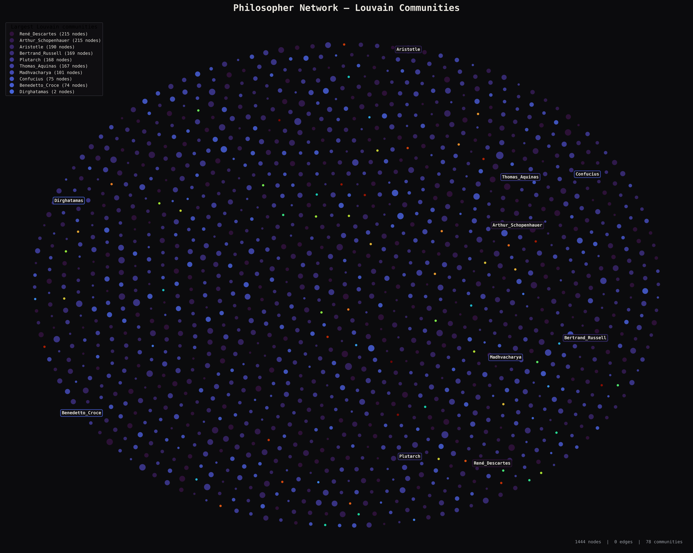

01Community Detection Agreement
We compare Louvain and Infomap partitions using the Normalized Mutual Information score and examine the philosophers whose memberships differ.
Agreement Summary
| Philosopher | Louvain | Infomap |
|---|
Disagreement Explorer
02 Louvain vs Infomap Communities
Louvain
Infomap

Louvain
Louvain detects communities by optimizing modularity. It groups nodes into densely connected clusters with relatively fewer connections between them.
Examine the size and distribution of the detected communities, and how clearly the clusters are separated.
03Aristotle's Overlapping Worlds
Aristotle appears across multiple densely connected regions of the network, linking traditions and intellectual lineages that would otherwise remain separated.
| Philosopher | Weight | Tradition |
|---|
04Backbone Analysis
| Alpha | Edges | Components | Giant Component |
|---|
Alpha Explorer
05Weighted vs Unweighted Communities
| Philosopher | Unweighted | Weighted |
|---|